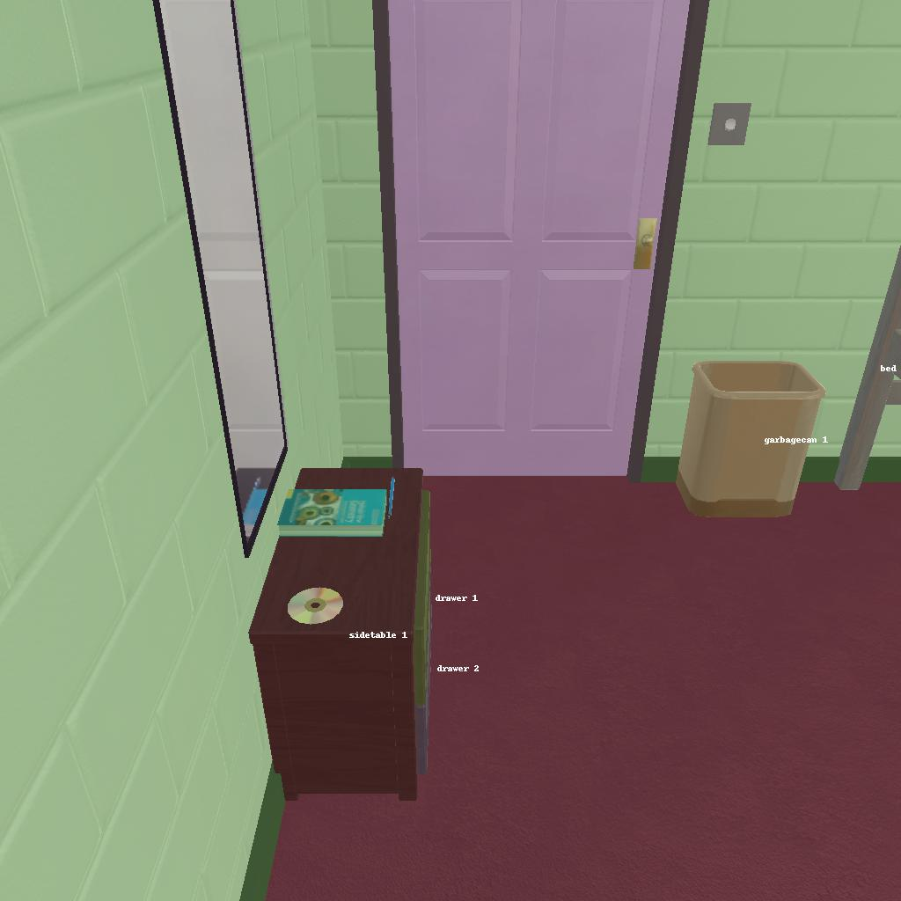

---------------------------------------------------------task: 8---------------------------------------------------------
--------------------------------------------------------------------------------------------------------------------------------------------------------------------
--------------------------------------------------------------------------------------------------------------------------------------------------------------------
Step:--------------------------------------------------------------------------0-------------------------------------------------------------------------------
----------------------------------------
VLM Prompt:
Image1:
**Instruction**
1. Analyze the provided image to identify all visible household objects, focusing on those relevant to the task description "put some laptop on desk."
2. Use the analysis of the image and the task hint "The agent must find an object of the desired type, pick it up, find the correct location to place it, and put it down there." to answer the question: what is the most reasonable action in the choices for the task description "put some laptop on desk"?
4. Decide and write the answer using the template: The answer is: (i): , where i is the real number. If there is no desired object in the image, search every place based on **Initial Observation** to find the object. And if no one is exactly correct, choose a similar answer.
**Initial Observation**
You are in the middle of a room. Looking quickly around you, you can see bed (1), garbagecan (1), desk (1), sidetable (1), drawer (1-5), laundryhamper (1)
**Answer Choices**
(1): go to bed 1
(2): go to garbagecan 1
(3): go to desk 1
(4): go to sidetable 1
(5): go to drawer 1
(6): go to drawer 2
(7): go to laundryhamper 1
(8): go to drawer 3
(9): go to drawer 4
(10): go to drawer 5
**Answer**
Let's think step by step by following the instructions.
----------------------------------------
----------------------------------------
Original Response:
The task description is "put some laptop on desk." Therefore, we need to find a laptop and place it on the desk. From the initial observation, we know there is a desk (1) in the room, so this is likely where the laptop needs to be placed.
Looking at the image, we can see a sidetable with two drawers, a garbage can, and a glimpse of the bed. However, there is no laptop visible in this image. Since we need to find a laptop, we should search the locations that could potentially contain one. Drawers are a common place where small items like a laptop could be stored.
Based on the initial observation and the image provided, the most reasonable action to find a laptop would be to check the drawers since they are common storage spaces for such items.
The answer is: (5): go to drawer 1. If the laptop is not found in drawer 1, the subsequent action would be to check the other drawers in numerical order as listed in the answer choices.
----------------------------------------
----------------------------------------
>>> Refine Original VLM Response and Get Pure Action: go to drawer 1
----------------------------------------
-----------------------------------------------------------------
Running time: 9.097495079040527 seconds
Total Money: 2.265760000000001
-----------------------------------------------------------------
-----------------------------------------------------------------
Text Observation:You arrive at loc 4. The drawer 1 is closed.
-----------------------------------------------------------------
UNSUCCEED